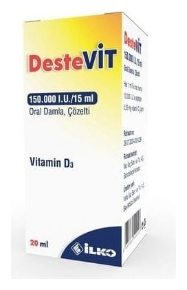

Destevit 150.000 IU/15 mL Oral Damla, Çözelti, 15 ML

Ne için kullanılır
KT · Bölüm 1DESTEVİT, etkin madde olarak, kolekalsiferol (vitamin D
) içerir. DESTEVİT, ters damlalık aparatlı 15 ml’lik amber renkli cam şişe içinde berrak, yağsı görünümlü, sarı- yeşil renkli çözelti ile karton kutularda kullanıma sunulmaktadır.
DESTEVİT, D vitamini eksikliği tedavisinde, idamesinde ve önlenmesinde kullanılır.